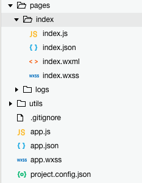

一、什么是小程序？
基于微信的可以为用户提供一些服务的web项目，利用微信提供的接口可以让所有开发者使用到微信的原生能力，去完成一些之前做不到或者难以做到的事情。
二、小程序开发工具以及语言？
小程序需要用到微信提供的小程序开发工具，小程序的主要开发语言是 JavaScript 。
三、小程序与普通网页开发的区别？
网页开发渲染线程和脚本线程是互斥的，这也是为什么长时间的脚本运行可能会导致页面失去响应，而在小程序中，二者是分开的，分别运行在不同的线程中。网页开发者可以使用到各种浏览器暴露出来的 DOM API，进行 DOM 选中和操作。而如上文所述，小程序的逻辑层和渲染层是分开的，逻辑层运行在 JSCore 中，并没有一个完整浏览器对象，因而缺少相关的DOM API和BOM API。这一区别导致了前端开发非常熟悉的一些库，例如 jQuery、 Zepto 等，在小程序中是无法运行的。同时 JSCore 的环境同 NodeJS 环境也是不尽相同，所以一些 NPM 的包在小程序中也是无法运行的。
四、小程序的代码构成？
（1）在我们新建的小程序项目里面会有四种类型的文件。
.json 后缀的 JSON 配置文件 （静态配置信息） .wxml 后缀的 WXML 模板文件（相当于原生html文件）.wxss 后缀的 WXSS 样式文件（相当于原生css文件）.js 后缀的 JS 脚本逻辑文件（2） 代码结构详细说明。在新建的项目里面我们可以看到如下图所示目录

1. project.config.json 工具配置
内部含有多项内容的配置，概括是个性化配置、打包、调试、自定义预处理的一系列配置。详细请参考
2. app.json 全局配置
app.json 是当前小程序的全局配置，包括了小程序的所有页面路径、界面表现、网络超时时间、底部 tab 等。
pages字段 —— 用于描述当前小程序所有页面路径，相当于路由配置的地址。（但是在pages配置一条路径地址，则会在相应为文件夹建立相应的文件）
window字段 —— 定义小程序所有页面的顶部背景颜色，文字颜色定义等。
tabBar字段 —— 如果小程序是一个多 tab 应用（客户端窗口的底部或顶部有 tab 栏可以切换页面），可以通过 tabBar 配置项指定 tab 栏的表现，以及 tab 切换时显示的对应页面。 详细请参考
3. app.js 小程序的生命周期回调 详情参考
onLaunch(Object object) 小程序初始化完成时触发，全局只触发一次。
globalData 全局数据，在每个页面都可获取到。
4. utils 封装的公共方法
5. pages 里面包含每个页面
index.json 里面包含了对页面的一些设置，例如：导航栏颜色、窗口背景、禁止页面右滑手势返回等设置，详细请参考
.wxml 文件类似于html，描述页面页面的结构，小程序的 WXML 用的标签是 view, button, text是已经包装好的组件，多了一些 wx:if 这样的属性以及 {{ }} 这样的表达式。详细请参考
.wxss WXSS 具有 CSS 大部分的特性，小程序在 WXSS 也做了一些扩充和修改。新增的尺寸单位 rpx ，用来适配不用的屏幕宽高问题，此外 WXSS 仅支持部分 CSS 选择器。详细请参考
.js 整体有点vue的感觉，比较简单好上手，涉及到详细的接口调用，的一些语法糖。index.js 里面的pages( {data:{}}) data 里面存放页面需要到的数据，其他可以设置一些事件。详情请参考 wxml事件
针对小程序的练习项目地址： https://github.com/yuejuanmyword/myfirstWechat.git
以上为本人原创，参考资料 https://developers.weixin.qq.com/miniprogram/introduction/index.html
如有不当，请留言指教。